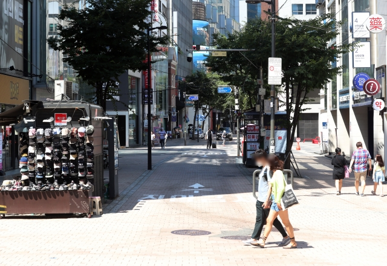

수도권 4단계 또 10월3일까지…백신 조건부 ‘6인 모임’
수도권, 낮(접종완료2인+)·저녁(4인+) 모임 최대 6명
비수도권, 모든 다중이용시설 ‘4+4 모임’
추석 연휴 가족 ‘8명(4인+)’ 모임 허용

사회적 거리두기 4단계로 한산한 서울 명동 거리 모습. 뉴시스
현행 수도권의 사회적 거리두기 4단계가 오는 10월3일까지 한 달 더 연장된다. 다만 거리두기 장기화에 따른 피로감을 반영해 음식점 등 영업시간은 오후 10시까지로 1시간 다시 길어진다. 모임인원 제한은 백신접종완료자 수에 따라 최대 6명까지로 완화된다.
김부겸 국무총리는 3일 정부서울청사에서 주재한 코로나19 중앙재난안전대책본부 회의에서 이달 6일부터 4주간 적용할 방역대책을 발표했다.
김 총리는 수도권 4단계 거리두기 단계 연장을 언급하고 “민생의 어려움을 조금이나마 덜어드리기 위해 방역기준을 합리적으로 조정하고자 한다”며 “식당·카페는 영업시간을 밤 9시에서 10시로 환원한다”고 밝혔다.
이어 “식당·카페에서의 모임인원 제한도 6명까지 허용한다”며 “다만 낮에는 2인 이상, 저녁 6시 이후에는 4인 이상의 접종완료자가 포함된 경우로 한정한다”고 설명했다.
비수도권을 중심으로 한 3단계 지역에 대해서는 “모든 다중이용시설에서 접종완료자 4인을 포함, 최대 8명까지 사적모임이 가능하게 된다”고 말했다.
추석 연휴 기간에 대해서는 “추석을 포함해 1주일간은 접종완료자 4명을 포함해, 최대 8명까지 가정 내 가족모임을 허용하기로 했다”고 설명했다.
조민영 기자(mymin@kmib.co.kr)
원본기사 링크